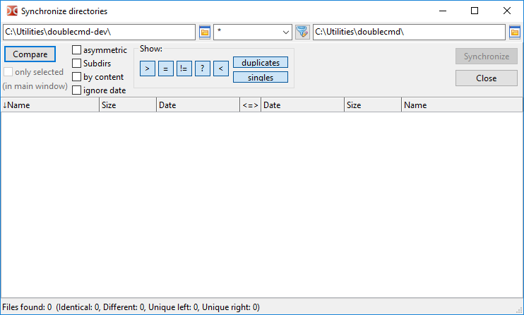
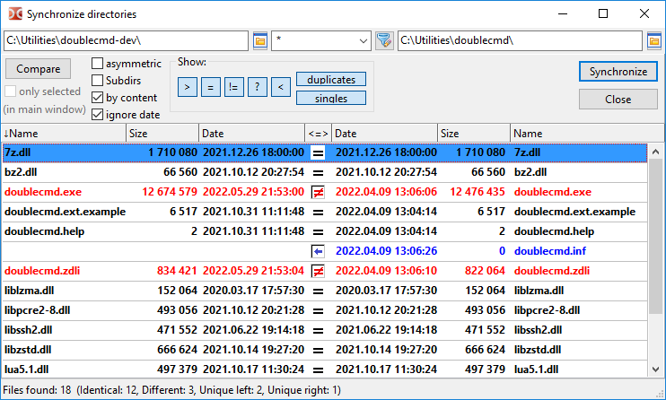

The directory synchronization tool scans the directories of the left and right file panels, displays differences in their contents and allows to make them the same.
We can synchronize two local directories or a local directory and a directory on a virtual file system (an open archive or a directory in a file system plugin).
By default, the synchronization tool compares files by name, size and modification date.
The method of deleting files (to trash (recycle bin) or permanently) depends on the state of the Delete to recycle bin (Shift key reverses this setting) option.
Note: Empty directories will be ignored.

In the top of the window there are fields with the current directories of the left and right file panels. We can change them manually or by using the button to choose a directory.
Between them there is a field for filtering files by mask (symbol "*" means match any number of characters, symbol "?" means any one character). Files that do not match the mask will be ignored. We may put multiple file types here using a semicolon ";" without spaces between them. Also we can use search templates ( ), including search with content plugins. The default value is "*" (all files).
), including search with content plugins. The default value is "*" (all files).
Compare – starts comparing the chosen directories. The progress of the compare operation is displayed in the status bar. If necessary, the operation can be interrupted with the Esc key.
Parameters:
only selected (in main window) – If enabled, only files and directories that have been selected in the file panel will be compared.
asymmetric – This option is meant to create a backup: a copy of the contents of the left panel should be created in the right panel. Files that do not exist on the left side will be marked for deletion on the right side. Not available if a delete operation is not possible in the directory on the right (for example, it is an archive and its format does not support modification, or it is a CD/DVD).
Subdirs – allows recursive file search: Double Commander will check the contents of all subdirectories.
by content – If enabled, files with the same size and date will be compared by content (a byte-by-byte comparison). Not available if the second directory is in a virtual file system.
ignore date – By default, Double Commander gives preference to a newer file and automatically selects the direction of copying, but if this option is enabled, files with the same size will be considered identical.
After changing these options, we must run the comparison again.
Show: – A group of buttons that enables or disables the display of various groups of files in the list:
> – Show files to be copied or deleted on the left.
= – Show files that are considered identical.
≠ – Show non-identical files.
< – Show files to be copied or deleted on the right.
duplicates – Show files that exist on both sides.
singles – Show files that only exist on one side.
Below is an area divided into three parts:
File lists will be displayed on the left and right. Both parts contain columns "Name", "Size" and "Date", we can sort files by clicking on the headers.
The middle column displays the status of files or the scheduled actions.
The status bar displays the overall result of the comparison.
After the comparison is finished, the synchronization tool will display the contents of the directories using several colors:

Green – Files selected for copying or deleting on the left.
Blue – Files selected for copying or deleting on the right.
Red – Files with the same names, but not identical.
For the rest of the files, the default text color will be used.
We can change them in the Colors settings section (the Synchronize Directories category).
Designations in the "<=>" column:
 – unknown;
– unknown;
 – identical files;
– identical files;
 – not-identical files;
– not-identical files;
 – files will be copied to the right;
– files will be copied to the right;
 – files will be copied to the left;
– files will be copied to the left;
 – files will be deleted on the left;
– files will be deleted on the left;
 – files will be deleted on the right;
– files will be deleted on the right;
 – files will be deleted on both sides;
– files will be deleted on both sides;
 – do nothing.
– do nothing.
Using the mouse or the Space key, we can uncheck the action and exclude files from the synchronization operation.
Double mouse clicking on a file name calls the Compare by Contents command.
Using the keyboard shortcut Ctrl+C, we can copy the contents of all columns to the clipboard.
Close – closes the synchronization tool.
Synchronize – opens a dialog window for confirming the synchronization, the window displays some details about the upcoming actions:
Here we can exclude the scheduled operations by type (copying or deleting) or direction.
Confirm overwrites – In case of a name collision, Double Commander will use the same dialog box with a choice of actions (skip, rename and others) as for usual copying/moving files.
Commands are applied to the file under the cursor or to selected files. All commands available in the synchronization tool have been added to the right mouse button menu. We can assign or change hotkeys for this commands in the Keys > Hot Keys settings section (switch to the Synchronize Directories category).
Select for copying (default direction) – Double Commander will recheck the files and try to select an action automatically.
Remove selection – cancels the assigned action and excludes files from the synchronization process.
Select for copying -> (left to right).
Select for copying <- (right to left).
Reverse copy direction.
View left and View right – open the file under the cursor on the left or right side in the file viewer.
Compare – calls the Compare by Contents command for the files under the cursor.
Select for deleting <- (left).
Select for deleting -> (right).
Select for deleting <-> (both).
<- Delete left.
-> Delete right.
Delete on both sides.
The last three commands delete the selected files immediately, before the synchronization operation. In this case, Double Commander will show a confirmation request.
Note: The hotkeys for the commands View left, View right and Compare are set in the source code of Double Commander and cannot be changed.
There are several parameters available that can only be changed manually in the doublecmd.xml configuration file: <Asymmetric>, <DateTimeFormat>, <FileMask>, <NtfsHourTimeDelay>.